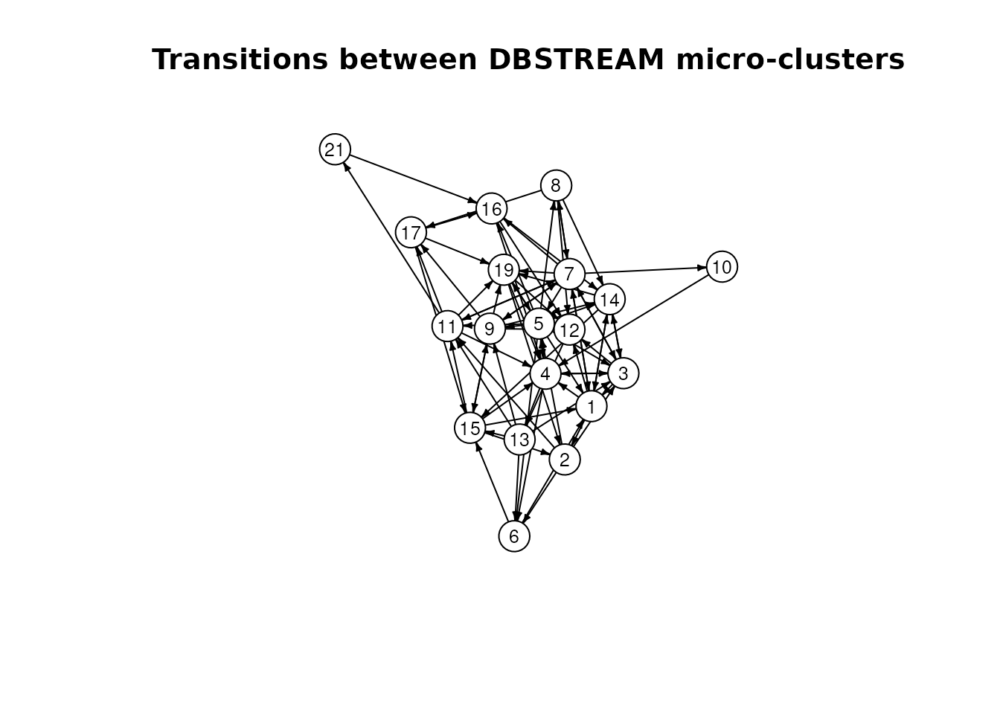

Adding temporal structure modeling to stream clustering
Michael Hahsler
Source:vignettes/stream.Rmd
stream.RmdIntroduction
The stream package provides data stream clustering
algorithms through its DSC interface (Hahsler et al. 2017). A clusterer groups
similar observations, but cluster membership alone does not describe the
order in which clusters occur.
TRACDS in rEMM adds a temporal model to
a sequence of cluster assignments (Hahsler and
Dunham 2011). Each cluster label becomes a state, and consecutive
labels update the counts of transitions between states. These counts can
be used to estimate transition probabilities and predict future
states.
This vignette demonstrates how to connect data stream clustering
algorithms in package stream to TRACDS()
by passing cluster assignments from each batch to the temporal
model.
Prepare the stream and models
We use the simulated, ordered observations supplied with
rEMM. stream::DSD_Memory() exposes the
training data as a stream. Keep observations in their original
order.
data("EMMsim")
dsd <- DSD_Memory(EMMsim_train)
dsd
#> Memorized Stream
#> Class: DSD_Memory, DSD_R, DSD
#> Contains 200 data points - currently at position 1 - loop is FALSE
dsc <- DSC_DBSTREAM(r = 0.1, lambda = 0)
tr <- TRACDS()DBSTREAM forms micro-clusters using radius r. We disable
fading here with lambda = 0 to keep the example simple.
Fading in the clusterer and the temporal model are configured
separately; TRACDS() also defaults to no fading.
Update both models
For each batch, first update the clusterer and request its
assignments. Then pass the assigned labels to TRACDS() in
observation order.
batch_size <- 50L
for (i in seq_len(ceiling(nrow(EMMsim_train) / batch_size))) {
points <- get_points(dsd, n = batch_size)
assignment <- update(dsc, points, return = "assignment")
update(tr, as.character(assignment$.mc_id))
}
head(assignment)
#> .class .mc_id
#> 1 6 6
#> 2 16 15
#> 3 9 9
#> 4 20 19
#> 5 5 5
#> 6 NA NADBSTREAM’s assignment data frame contains two kinds of cluster labels:
-
.classis the current micro-cluster index. These indices can change when micro-clusters are removed. -
.mc_idis the permanent micro-cluster identifier. Use this column as the state label in the temporal model.
See the DBSTREAM
documentation for details of the assignment format. Converting
identifiers to character matches the label interface of
TRACDS().
Successive calls to update(tr, ...) continue the same
sequence. The last assigned state in one batch connects to the first
assigned state in the next batch, unless an unassigned observation
breaks the sequence.
DBSTREAM can return NA for observations assigned to weak
micro-clusters. Keep these values in the label sequence:
TRACDS() treats an NA as a sequence boundary.
Removing missing labels would incorrectly connect observations on either
side of the gap.
Inspect the temporal model
The model stores states for the labels it has observed and counts
transitions between consecutive assigned observations.
ntransitions() counts distinct observed transitions,
including transitions back to the same state.
c(states = nstates(tr), transitions = ntransitions(tr))
#> states transitions
#> 19 82
current_state(tr)
#> [1] "13"
edges <- transitions(tr)
head(cbind(as.data.frame(edges),
counts = transition(tr, edges, type = "counts", prior = FALSE)))
#> from to counts
#> 1 3 1 2
#> 2 5 1 2
#> 3 6 1 1
#> 4 7 1 1
#> 5 14 1 2
#> 6 15 1 1transition_matrix() returns a matrix with source states
in rows and destination states in columns. By default,
prior = TRUE adds one to each transition count before
calculating probabilities. Use prior = FALSE to inspect the
observed counts directly.
counts <- transition_matrix(tr, type = "counts", prior = FALSE)
sum(counts)
#> [1] 142The total can be smaller than the number of observations minus one because missing assignments break the sequence.
plot(tr, vertex.size = 16, vertex.label.cex = 0.8,
edge.arrow.size = 0.3, main = "Transitions between DBSTREAM micro-clusters")
Vertices are permanent micro-cluster identifiers, and directed edges represent observed transitions. This plot shows the temporal graph; the clusterer retains the micro-cluster centers and other spatial information.
Predict the next state
predict() can return a probability distribution over
states, starting from the last assigned state. Here we show the six most
likely states one step ahead. The default prior gives unobserved
transitions a nonzero probability.
next_state <- predict(tr, n = 1, probabilities = TRUE)
head(sort(next_state, decreasing = TRUE))
#> 15 3 6 9 11 1
#> 0.3333333 0.1666667 0.1666667 0.1666667 0.1666667 0.0000000The names in this distribution are DBSTREAM micro-cluster
identifiers. They can be interpreted alongside the cluster information
stored in dsc.
Start an independent sequence
Call reset() before processing a new, independent
sequence. It clears the current state while retaining the learned states
and transition counts, so no transition is added from the end of the
previous sequence to the new one.
reset(tr)
current_state(tr)
#> [1] NAContinue with the same update loop when observations from the new sequence become available.
Use other stream clusterers
For other DSC implementation in stream,
check whether update(..., return = "assignment") returns
assignments and which columns it provides. Clusterers that do not return
assignments during updates may support
predict(dsc, points, type = "micro") after updating.
Predictions can be also used to update the temporal model, however note
that predictions assign each point to the clusters in the updated model,
which can differ from the assignments made as each point arrived for
clustering.
Before passing labels to TRACDS(), ensure that a label
continues to identify the same cluster across updates. Current indices
such as .class need a mapping to persistent identifiers if
clusters can be removed or reordered. Macro-cluster labels also need
care when reclustering changes their labels.
TRACDS() does not automatically synchronize cluster
deletions, merges, or relabeling with the DSC. For a
clusterer that changes cluster identities, maintain a consistent label
mapping or rebuild the temporal model for the new clustering. The update
loop above explicitly coordinates the two models.
For the package’s integrated clustering and temporal model, see
DSC_EMM() and the getting started
vignette.